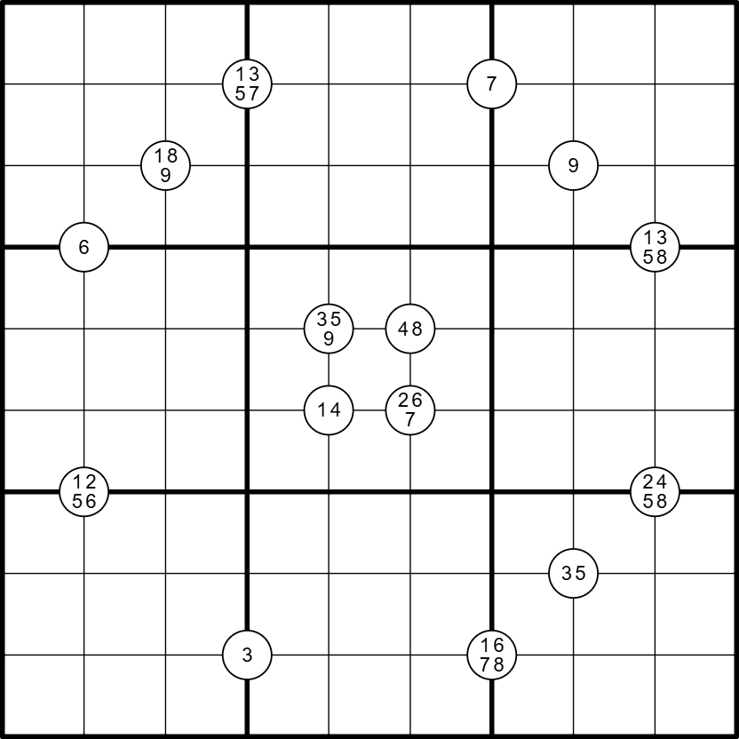

Vierwieler - ⭐️⭐️

LINK
REGELS:
Standaard sudoku:
Plaats de cijfers van 1 t/m 9 eenmaal in elke rij, kolom, en 3x3 blok.
Quadruples:
Cijfers in een witte cirkel staan minimaal één keer in de vier omringende vakjes.